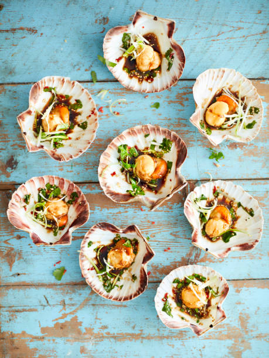

HomeA classic pan-seared scallop recipe involves patting dry large sea scallops, seasoning them with salt and pepper, and searing them in a hot skillet with butter and oil for 2–3 minutes per side until a golden crust forms and the center is just opaque. Serve immediately with a squeeze of fresh lemon and a garnish of chopped parsley for a simple yet elegant dish.